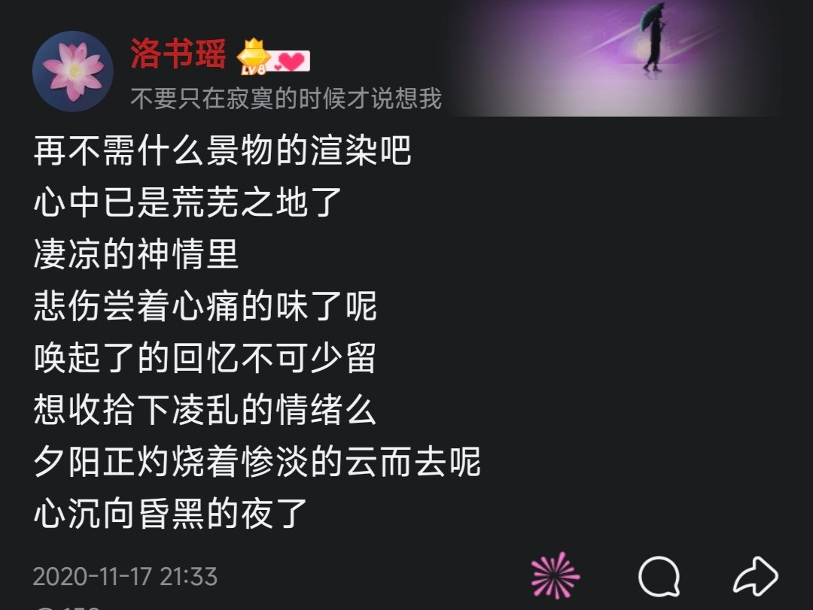
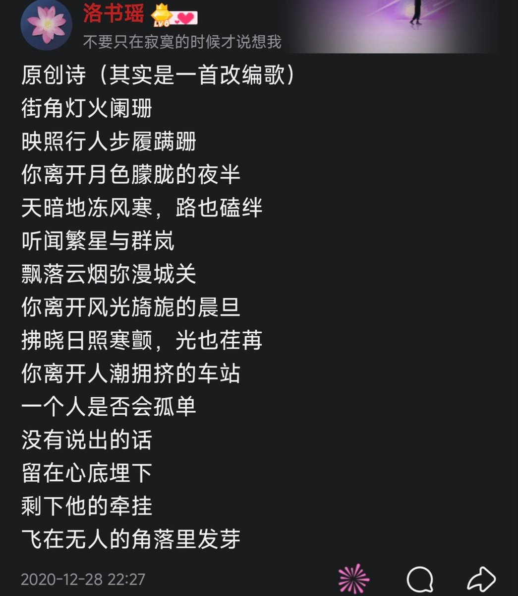

我觉得写诗是没有什么门槛的，大家都可以写。写诗只是我表达情绪的一种方式，可能写得不好，但是能把自己的情绪表达出来对我来说就足够了，毕竟我也不是专业的。
图1是我想换一个风格写出来的，实际上写给谁我都不知道，所以写的很公式，而且也感受不到什么感情。图2是我捕捉到了自己一丝微妙的情绪写出来的，仅仅是想写出那种感觉，并没有任何背景故事，感觉起来像是青春伤痛文学。我发现自己表达难过的时候就很容易写成情诗，实际上我并没有为情所伤，只是把自己的情绪寄托在上面而已。我觉得要写的话还是真实的好。
图3图4是我写的改编，那个时候还没成年，写的不多，写诗的风格也不成熟，刚开始写的时候，如果不知道怎么写，可以试试。


图1是我想换一个风格写出来的，实际上写给谁我都不知道，所以写的很公式，而且也感受不到什么感情。图2是我捕捉到了自己一丝微妙的情绪写出来的，仅仅是想写出那种感觉，并没有任何背景故事，感觉起来像是青春伤痛文学。我发现自己表达难过的时候就很容易写成情诗，实际上我并没有为情所伤，只是把自己的情绪寄托在上面而已。我觉得要写的话还是真实的好。
图3图4是我写的改编，那个时候还没成年，写的不多，写诗的风格也不成熟，刚开始写的时候，如果不知道怎么写，可以试试。


我教不了你，因为我从来没学过，我也不太会写，感觉自己写的很一般。不过我可以稍微提供一点建议。
可以用笔记录生活，多观察身边的所见所闻，把你的想法你的情绪写下来，多看看别人的诗。 https://t.co/pRJQ45Pu0U
可以用笔记录生活，多观察身边的所见所闻，把你的想法你的情绪写下来，多看看别人的诗。 https://t.co/pRJQ45Pu0U